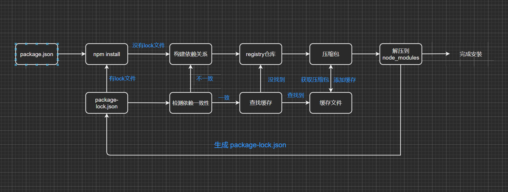

# 代码共享方案
- 我们已经学习了在 JavaScript 中可以通过模块化的方式将代码划分成一个个小的结构：
- 在以后的开发中我们就可以通过模块化的方式来封装自己的代码，并且封装成一个工具；
- 这个工具我们可以让同事通过导入的方式来使用，甚至你可以分享给世界各地的程序员来使用；
- 如果我们分享给世界上所有的程序员使用，有哪些方式呢？
- 方式一：上传到 GitHub 上、其他程序员通过 GitHub 下载我们的代码手动的引用；
- 缺点是大家必须知道你的代码 GitHub 的地址，并且从 GitHub 上手动下载；
- 需要在自己的项目中手动的引用，并且管理相关的依赖；
- 不需要使用的时候，需要手动来删除相关的依赖；
- 当遇到版本升级或者切换时，需要重复上面的操作；
- 显然，上面的方式是有效的，但是这种传统的方式非常麻烦，并且容易出错；
- 方式二：使用一个专业的工具来管理我们的代码
- 我们通过工具将代码发布到特定的位置；
- 其他程序员直接通过工具来安装、升级、删除我们的工具代码；
- 显然，通过第二种方式我们可以更好的管理自己的工具包，其他人也可以更好的使用我们的工具包。
# 包管理工具 npm
- 包管理工具 npm：
- Node Package Manager，也就是 Node 包管理器；
- 但是目前已经不仅仅是 Node 包管理器了，在前端项目中我们也在使用它来管理依赖的包；
- 比如 vue、vue-router、vuex、express、koa、react、react-dom、axios、babel、webpack 等等；
- 如何下载 npm 工具呢？
- npm 属于 node 的一个管理工具，所以我们需要先安装 Node；
- node 管理工具：https://nodejs.org/en/
- npm 管理的包可以在哪里查看、搜索呢？
- https://www.npmjs.org/
- 这是我们安装相关的 npm 包的官网；
- npm 管理的包存放在哪里呢？
- 我们发布自己的包其实是发布到 registry 上面的；
- 当我们安装一个包时其实是从 registry 上面下载的包；
# npm 的配置文件
-
那么对于一个项目来说，我们如何使用 npm 来管理这么多包呢？
-
事实上，我们每一个项目都会有一个对应的配置文件，无论是前端项目（Vue、React）还是后端项目（Node）；
-
这个配置文件会记录着你项目的名称、版本号、项目描述等；
-
也会记录着你项目所依赖的其他库的信息和依赖库的版本号；
-
-
这个配置文件就是 package.json
-
那么这个配置文件如何得到呢？
- 方式一：手动从零创建项目，npm init –y
- 方式二：通过脚手架创建项目，脚手架会帮助我们生成 package.json，并且里面有相关的配置
# npm init 进行配置
- npm init 先进行初始化
npm init // 执行 添加 初始化 json 文件 |
- 如果您的文件名称是中文 则会出现以下提示
Sorry, name can only contain URL-friendly characters.
- 所以最好以英文命名，这里我以
demo命名，就会出现下面这句代码
version: (1.0.0) // 代表这个项目准备的版本号是什么 |
- 我们回车默认
1.0.0版本号，接着出现下面这句代码
description: // 可以对项目做一个描述 |
- 这里我随便加上一句
test demo来进行描述，然后出现下面代码
entry point: (index.js) // 当前项目的入口是什么 |
- 我这里以
src/main.js为入口，继续出现下面代码
test command: // 要不要有个测试的命令 |
- 这里我暂时不用，直接敲回车就行了，然后继续出现下面代码
git repository: // 准不准备放到 git 仓库里面 |
- 这里我也不用，所以直接敲回车，然后继续出现下面代码
keywords: // 关键字 -> 想让别人搜索到你时的关键字 |
- 这里我也不用，直接敲回车，然后继续出现下面代码
author: // 作者是谁 |
- 这里我写上
nekoaimer这个名字，然后回车出现下面代码
license: (ISC) // 开源协议 |
- 这里我也不写了，直接默认
ISC协议，然后会生成package.json内容并会询问你ok？
About to write to // 这里是写代码的路径 | |
ckage.json: | |
{ | |
"name": "demo", | |
"version": "1.0.0", | |
"description": "test demo", | |
"main": "src/main.js", | |
"scripts": { | |
"test": "echo \"Error: no test specified\" && exit 1" | |
}, | |
"author": "nekoaimer", | |
"license": "ISC" | |
} | |
Is this OK? (yes) |
- 这里我们敲回车确认，生成
package.json文件
//package.json 文件 | |
{ | |
"name": "demo", | |
"version": "1.0.0", | |
"description": "test demo", | |
"main": "src/main.js", | |
"scripts": { | |
"test": "echo \"Error: no test specified\" && exit 1" | |
}, | |
"author": "nekoaimer", | |
"license": "ISC" | |
} |
# npm init -y 进行配置
- 使用
npm init -y命令代表刚刚那些问题都是yes
npm init -y |
- 但可能会发生下面的错误
npm ERR! Invalid name: xxx(中文名) // 上面提到过的，不能使用中文名 | |
npm ERR! A complete log of this run can be found in: xxx // 告诉你 npm 犯错！此运行的完整日志可在以下文件中找到: | |
npm ERR! xxx 路径 |
- 我们将文件名改为
demo, 再进行npm init -y操作，则会出现生产成功的代码，只不过都是类似直接回车默认的信息
{ | |
"name": "demo", | |
"version": "1.0.0", | |
"description": "", | |
"main": "index.js", | |
"scripts": { | |
"test": "echo \"Error: no test specified\" && exit 1" | |
}, | |
"keywords": [], | |
"author": "", | |
"license": "ISC" | |
} |
# 或者创建 vue/react 等脚手架
- 这里以
vue举栗，这样也是会有package.json文件的
vue create demo |
- 一般我们都是以这种方式创建，它会自动帮你生成好这个目录，目录里默认就要这个文件！
# 常见的属性
-
必须填写的属性：name、version
- name 是项目的名称；
- version 是当前项目的版本号；
- description 是描述信息，很多时候是作为项目的基本描述；
- author 是作者相关信息（发布时用到）；
- license 是开源协议（发布时用到）；
-
private 属性：
- private 属性记录当前的项目是否是私有的；
- 当值为 true 时，npm 是不能发布它的，这是防止私有项目或模块发布出去的方式；
{ | |
"name": "demo", | |
"version": "1.0.0", | |
"description": "", | |
"main": "index.js", | |
"private": true, // 脚手架生产时一般会加上这个字段，例如公司项目一般情况下不允许开源 | |
"scripts": { | |
"test": "echo \"Error: no test specified\" && exit 1" | |
}, | |
"keywords": [], | |
"author": "", | |
"license": "ISC" | |
} |
# main 属性
- 设置程序的入口。
- 很多人会有疑惑，webpack 不是会自动找到程序的入口吗？
- 这个入口和 webpack 打包的入口并不冲突
- 它是在你发布一个模块的时候会用到的
- 比如我们使用 axios 模块 const axios = require ('axios')
- 实际上是找到对应的 main 属性查找文件的
- 一般情况，开源的项目都是需要
main属性的，下比如axios的源码就是指向index.js的
# scripts 属性
- scripts 属性用于配置一些脚本命令，以键值对的形式存在；
- 配置后我们可以通过 npm run 命令的 key 来执行这个命令；
- 举个栗子
foo.js
// 比如在 foo.js 文件 有一句打印命令 | |
console.log("npm foo~") |
package.json
"scripts": { | |
"foo": "node ./foo.js" // 在 scripts 写上这句代码 | |
}, |
- 控制台进行
npm run foo命令 - 成功打印
npm foo~信息
- 有时候能看见不写 run 命令的，类似下面这两句代码
npm start | |
npm run start |
-
那么 npm start 和 npm run start 的区别是什么？
-
它们是等价的；
-
对于常用的 start、 test、stop、restart 可以省略掉 run 直接通过 npm start 等方式运行；
-
# dependencies 属性
- dependencies 属性是指定无论开发环境还是生成环境都需要依赖的包；
- 通常是我们项目实际开发用到的一些库模块 vue、vuex、vue-router、react、react-dom、axios 等等；
- 比如下面进行安装
axios, 会生成node_modules这个文件，同时dependencies就会记录下来
"dependencies": { | |
"axios": "^0.25.0" | |
} |
- 这样的好处就是比如给同事代码时，不需要将
node_modules这个文件也传过去，因为这个文件占用内存可能会非常大，传输也非常麻烦与慢- 而将
package.json这个文件发过去，对方进行npm install操作就会根据依赖自动安装对应的包，这种方法更加简单快速
- 而将
- 而与之对应的则是 devDependencies 属性
# devDependencies 属性
- 一些包在生成环境是不需要的，比如 webpack、babel 等；
- 这个时候我们会通过 npm install webpack --save-dev，将它安装到 devDependencies 属性中；
- 例如安装
webpack和webpack-cli, 使用npm install webpack webpack-cli --save-dev命令，与上面一样也会记录下来. - 或者
npm install webpack webpack-cli -D, 这是上面命令的缩写
// 代表开发时依赖 | |
"devDependencies": { | |
"webpack": "^5.68.0", | |
"webpack-cli": "^4.9.2" | |
} |
# peerDependencies 属性
-
还有一种项目依赖关系是对等依赖，也就是你依赖的一个包，它必须是以另外一个宿主包为前提的
-
比如 element-plus 是依赖于 vue3 的，ant design 是依赖于 react、react-dom
-
例如
element-plus中package.json里就有用到 -> https://github.com/element-plus/element-plus/blob/dev/package.json
"peerDependencies": { | |
"vue": "^3.2.0" | |
} |
- 还有
ant design中package.json也是有的 -> https://github.com/ant-design/ant-design/blob/master/package.json
"peerDependencies": { | |
"react": ">=16.9.0", | |
"react-dom": ">=16.9.0" | |
} |
# package 中的版本管理
- 我们会发现安装的依赖版本出现：^2.0.3 或～2.0.3，这是什么意思呢？
- npm 的包通常需要遵从 semver 版本规范：
- semver：https://semver.org/lang/zh-CN
- npm semver：https://docs.npmjs.com/misc/semver
- semver 版本规范是 X.Y.Z：
- X 主版本号（major）：当你做了不兼容的 API 修改（可能不兼容之前的版本）；
- Y 次版本号（minor）：当你做了向下兼容的功能性新增（新功能增加，但是兼容之前的版本）；
- Z 修订号（patch）：当你做了向下兼容的问题修正（没有新功能，修复了之前版本的 bug）；
- 我们这里解释一下 ^ 和～的区别：
- ^x.y.z：表示 x 是保持不变的，y 和 z 永远安装最新的版本；
- ~x.y.z：表示 x 和 y 保持不变的，z 永远安装最新的版本；
package.json记录的是大概版本package-lock.json记录的则是真实版本- 而项目里上面两个文件都有，将
node_modules删掉，执行npm install时会根据package.json版本匹配package-lock.json版本 - 如果
package-lock.json记录的版本是符合package.json版本的，那么就会按照package-lock.json记录的版本安装
# 常见属性
- engines 属性
- engines 属性用于指定 Node 和 NPM 的版本号；
- 在安装的过程中，会先检查对应的引擎版本，如果不符合就会报错；
- 事实上也可以指定所在的操作系统 "os" : ["darwin", "linux"]，只是很少用到；
- browserslist 属性
- 用于配置打包后的 JavaScript 浏览器的兼容情况
- 否则我们需要手动的添加 polyfills 来让支持某些语法
- 也就是说它是为 webpack 等打包工具服务的一个属性
# npm install 命令
-
安装 npm 包分两种情况：
- 全局安装（global install）： npm install webpack -g;
- 项目（局部）安装（local install）： npm install webpack
-
全局安装
-
全局安装是直接将某个包安装到全局
-
比如 yarn 的全局安装：
-
-
但是很多人对全局安装有一些误会：
- 通常使用 npm 全局安装的包都是一些工具包：yarn、webpack 等；
- 并不是类似于 axios、express、koa 等库文件；
- 所以全局安装了之后并不能让我们在所有的项目中使用 axios 等库；
# 项目安装
- 项目安装会在当前目录下生产一个 node_modules 文件夹，我们之前讲解 require 查找顺序时有讲解过这个包在什么情况下被查找；
- 局部安装分为开发时依赖和生产时依赖：
- 安装开发和生产依赖
npm install axiosnpm i axios
- 开发依赖
npm install webpack --save-devnpm install webpack -Dnpm i webpack –D
- 根据 package.json 中的依赖包
npm install
# npm install 原理
- 很多同学之前应该已经会了 npm install <package>，但是你是否思考过它的内部原理呢？
- 执行 npm install 它背后帮助我们完成了什么操作？
- 我们会发现还有一个成为 package-lock.json 的文件，它的作用是什么？
- 从 npm5 开始，npm 支持缓存策略（来自 yarn 的压力），缓存有什么作用呢？
- 这是一幅我画出的根据 npm install 的原理图：

- 可通过
npm get cache查看缓存
# npm install 原理图解析
-
npm install 会检测是有 package-lock.json 文件：
- 没有 lock 文件
- 分析依赖关系，这是因为我们可能包会依赖其他的包，并且多个包之间会产生相同依赖的情况；
- 从 registry 仓库中下载压缩包（如果我们设置了镜像，那么会从镜像服务器下载压缩包）；
- 获取到压缩包后会对压缩包进行缓存（从 npm5 开始有的）；
- 将压缩包解压到项目的 node_modules 文件夹中（前面我们讲过，require 的查找顺序会在该包下面查找）
- 有 lock 文件
-
检测 lock 中包的版本是否和 package.json 中一致（会按照 semver 版本规范检测）；
- 不一致，那么会重新构建依赖关系，直接会走顶层的流程；
-
一致的情况下，会去优先查找缓存
- 没有找到，会从 registry 仓库下载，直接走顶层流程；
-
查找到，会获取缓存中的压缩文件，并且将压缩文件解压到 node_modules 文件夹中；
# package-lock.json
- package-lock.json 文件解析：
- name：项目的名称；
- version：项目的版本；
- lockfileVersion：lock 文件的版本；
- requires：使用 requires 来跟踪模块的依赖关系；
- dependencies：项目的依赖
- 当前项目依赖 axios，但是 axios 依赖 follow-redireacts；
- axios 中的属性如下：
- version 表示实际安装的 axios 的版本；
- resolved 用来记录下载的地址，registry 仓库中的位置；
- requires 记录当前模块的依赖；
- integrity 用来从缓存中获取索引，再通过索引去获取压缩包文件；
# npm 其他命令
- 我们这里再介绍几个比较常用的：
- 卸载某个依赖包：
npm uninstall packagenpm uninstall package --save-devnpm uninstall package -D
- 强制重新 build
npm rebuild
- 清除缓存
npm cache clean
- npm 的命令其实是非常多的：
- https://docs.npmjs.com/cli-documentation/cli
- 更多的命令，可以根据需要查阅官方文档
# yarn 工具
- 另一个 node 包管理工具 yarn：
- yarn 是由 Facebook、Google、Exponent 和 Tilde 联合推出了一个新的 JS 包管理工具
- yarn 是为了弥补 npm 的一些缺陷而出现的
- 早期的 npm 存在很多的缺陷，比如安装依赖速度很慢、版本依赖混乱等等一系列的问题
- 虽然从 npm5 版本开始，进行了很多的升级和改进，但是依然很多人喜欢使用 yarn
| Npm | Yarn |
|---|---|
| npm install | yarn install |
| npm install [package] | yarn add [package] |
| npm install --save [package] | yarn add [package] |
| npm install --save-dev [package] | yarn add [package] [--dev/-D] |
| npm rebuild | yarn install --force |
| npm uninstall [package] | yarn remove [package] |
| npm uninstall --save [package] | yarn remove [package] |
| npm install --save-dev [package] | yarn remove [package] |
| npm install --save-optional [package] | yarn remove [package] |
| npm cache clean | yarn cache clean |
| rm -rf node_modules && npm install | yarn upgrade |
注意npm和yarn不要混用
# cnpm 工具
-
由于一些特殊的原因，某些情况下我们没办法很好的从 https://registry.npmjs.org 下载下来一些需要的包。
-
查看 npm 镜像：
npm config get registry # npm config get registry -
我们可以直接设置 npm 的镜像：
npm config set registry https://registry.npm.taobao.org -
但是对于大多数人来说（比如我），并不希望将 npm 镜像修改了：
- 第一，不太希望随意修改 npm 原本从官方下来包的渠道；
- 第二，担心某天淘宝的镜像挂了或者不维护了，又要改来改去；
-
这个时候，我们可以使用 cnpm，并且将 cnpm 设置为淘宝的镜像：
- npm install -g cnpm --registry=https://registry.npm.taobao.org
- cnpm config get registry # https://r.npm.taobao.org
# npx 工具
- npx 是 npm5.2 之后自带的一个命令。
- npx 的作用非常多，但是比较常见的是使用它来调用项目中的某个模块的指令。
- 我们以 webpack 为例：
- 全局安装的是 webpack5.1.3
- 项目安装的是 webpack3.6.0
- 如果我在终端执行 webpack --version 使用的是哪一个命令呢？
- 显示结果会是 webpack 5.1.3，事实上使用的是全局的，为什么呢？
- 原因非常简单，在当前目录下找不到 webpack 时，就会去全局找，并且执行命令；
- 如何解决这个问题呢？
# 局部命令的执行
-
那么如何使用项目（局部）的 webpack，常见的是两种方式：
- 方式一：明确查找到 node_module 下面的 webpack
- 方式二：在 scripts 定义脚本，来执行 webpack；
-
方式一：在终端中使用如下命令（在项目根目录下）
./node_modules/.bin/webpack --version
-
方式二：修改 package.json 中的 scripts
"scripts": { "webpack": "webpack --version" }
-
方式三：使用 npx
npx webpack --version
-
npx 的原理非常简单，它会到当前目录的 node_modules/.bin 目录下查找对应的命令；
-
另外全局的环境变量安装查看命令
npm config get prefix